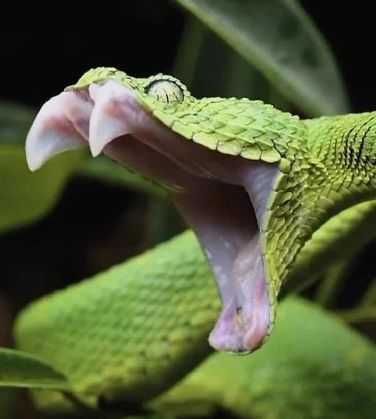

Venomous Snakes use venom to inject to their victims when they bite. Their venoms is passed through their needle-like fangs. The venom immobilizes their prey, paralyzing, and damaging tissues inside the body, mostly if let untreated can lead to death.
The Fangs of Poison

Venomous Snakes use venom to inject to their victims when they bite. Their venoms is passed through their needle-like fangs. The venom immobilizes their prey, paralyzing, and damaging tissues inside the body, mostly if let untreated can lead to death.